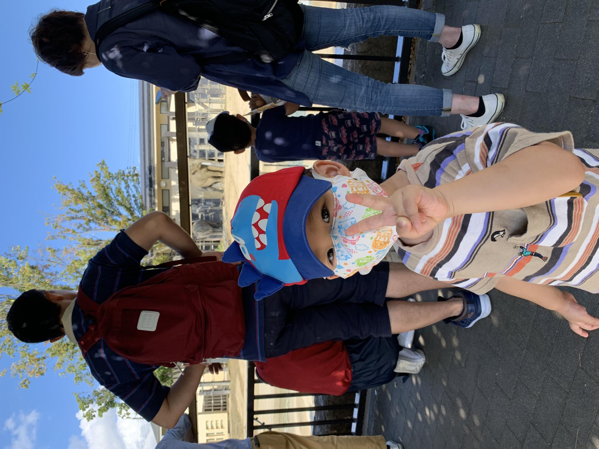
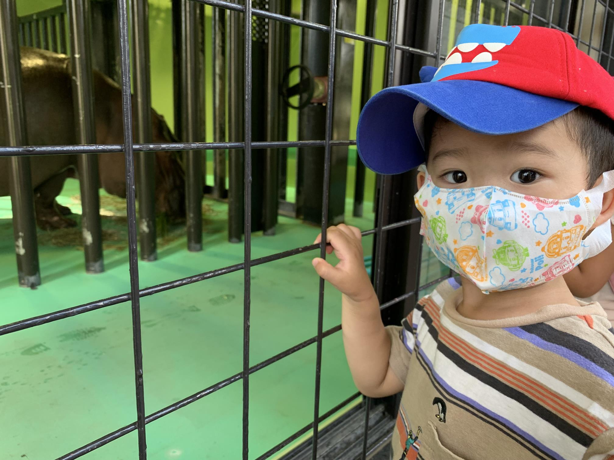
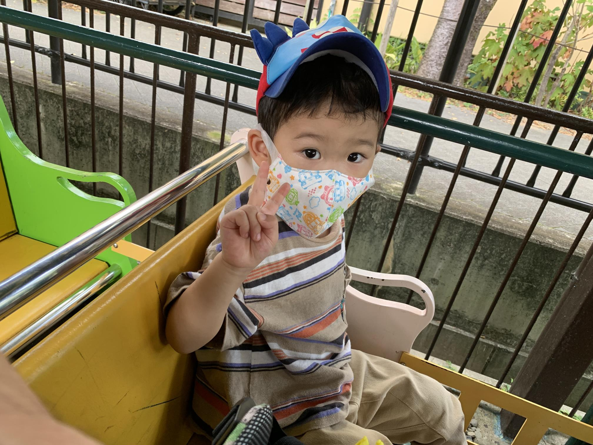
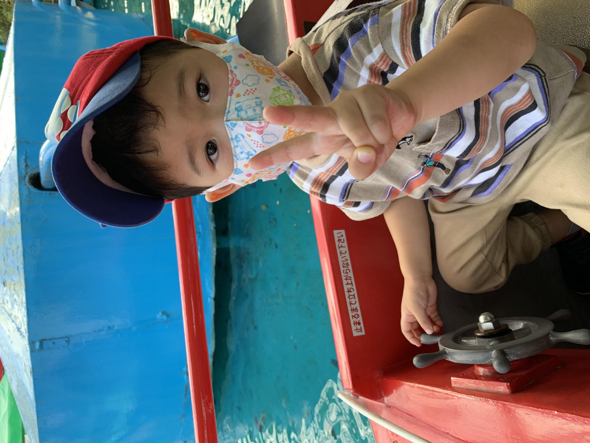
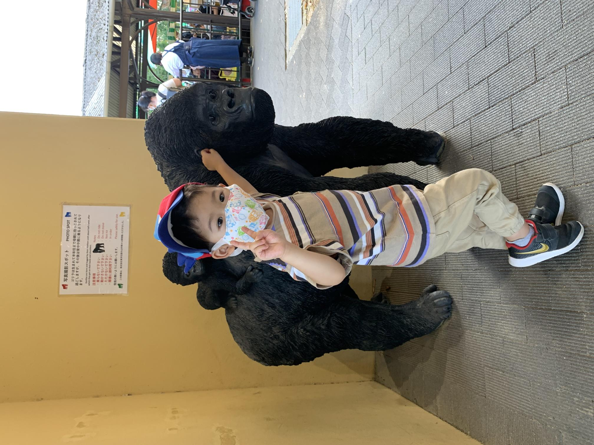
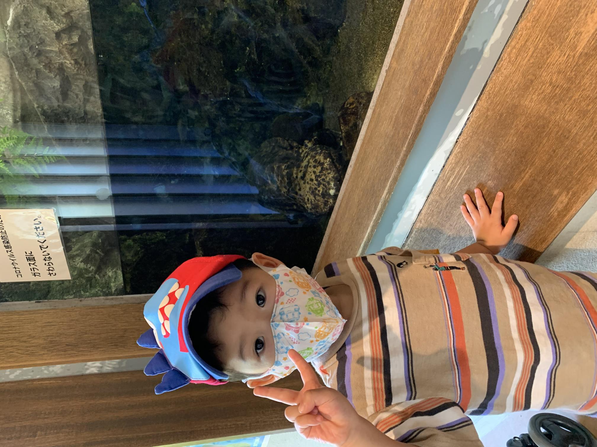

京都市動物園
2021年10月10日
     惇紀は、オオサンショウウオが気に入ったみたいで、どの動物よりも長い時間ずっと見ていました。
汽車に乗り、船にも乗りました。観覧車もリクエストされたが、また今度。
暑い日は、草食動物をメインに
ゴリラ、象、キリンは、3時までに
カバは、3-4時がよい。
混んでるときは、ベビーカー持参
昼は、山元麺蔵の炊き込みご飯。380円。ほどよいボリューム。10分前に電話すれば、待ち時間なし。味は、いいだしが効いてて、美味しい。
帰りは、山元麺蔵の持ち帰り（ざるうどん 650円。かけうどん 650円。ゴボウ天ぷら 400円。） 味は、勿論おいしい。夏季限定のざるうどんがあれば、これが一番おススメ。
小銭で、1500円ぐらいあった方がいい。動物園前駐車場（動物園がある交差点を通り過ぎて、右側）は、最大1500円。この日は、お札が入らなかった。
混んでるときは、ベビーカーが借りれない
暑い日は、ジャガー、トラなどは、じっとして動かない。
暑い日は、カバも水からほとんど出てこない。
ゴリラは、3時半まで。象も、この時間には、室内に移動
3～4時頃、プール掃除の為、カバが移動してくれる。
4時頃は、キリンは室内に移動